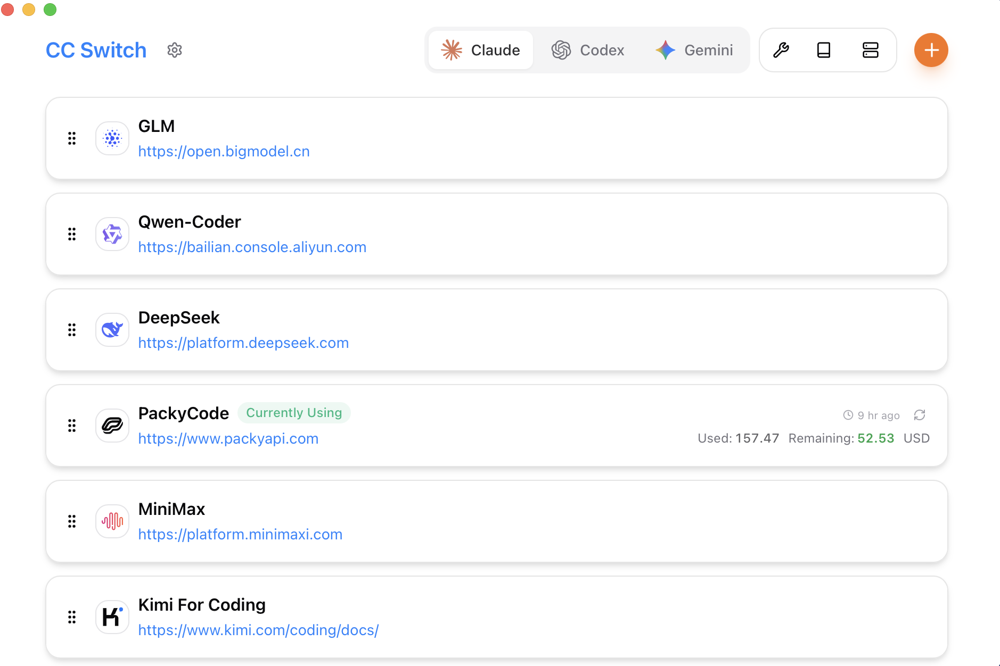
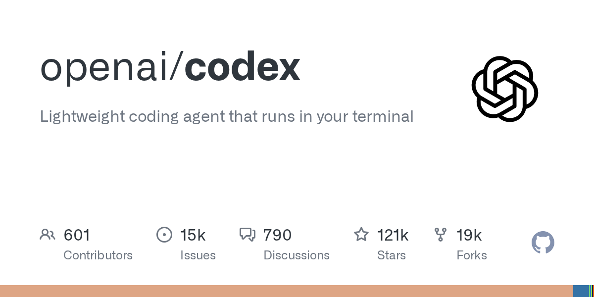

免费开源桌面工具
CC Switch
集中管理 Claude Code、Codex、Gemini CLI 等开发工具的供应商与配置。


点击后会先显示目标地址。确认无误，再在新页面中选择适合你系统的文件。
免费开源桌面工具
集中管理 Claude Code、Codex、Gemini CLI 等开发工具的供应商与配置。
OpenAI 官方仓库
前往 OpenAI 官方发布列表。优先选择标记为 Latest 的稳定版本。
GitHub 发布页包含多个文件。根据设备与系统架构选择，不要从陌生镜像下载安装包。
CC Switch 应显示 farion1231/cc-switch，Codex 应显示 openai/codex。
普通用户优先选择 Latest。名称含 alpha 或标记 Pre-release 的版本可能不稳定。
根据 Windows、macOS、Linux 以及 arm64、x86_64 等架构选择对应文件。